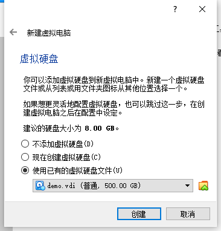
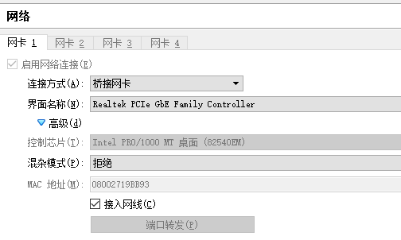

重装系统后如何重新启用Virtual Box

避免后面出现如下报错信息，请先检查vboxdrv服务是否正常运行
NtCreateFile(\Device\VBoxDrvStub) failed: 0xc000000034 STATUS_OBJECT_NAME_NOT_FOUND (0 retries) (rc=-101)
Make sure the kernel module has been loaded successfully.
vboxdrv服务
- cmd键入
sc.exe query vboxdrv检测其运行状态 - 若未启动，键入
sc start vboxdrv进行启动 - 启动失败则需要重新安装，进入安装路径
C:\Program Files\Oracle\VirtualBox\drivers\vboxdrv, 右击VBoxDrv.inf，选安装，然后重启。
下面我们开始恢复
重现你当时安装所选的配置，在到虚拟硬盘的步骤时，选择使用现有文件，找到你之前的vdi文件，点击创建，大功告成

一些坑...
-
一定要把网络设置为桥接网卡

-
检查linux网卡配置
vim /etc/sysconfig/network-scripts/ifcfg-enp0s3vim /etc/resolv.conf